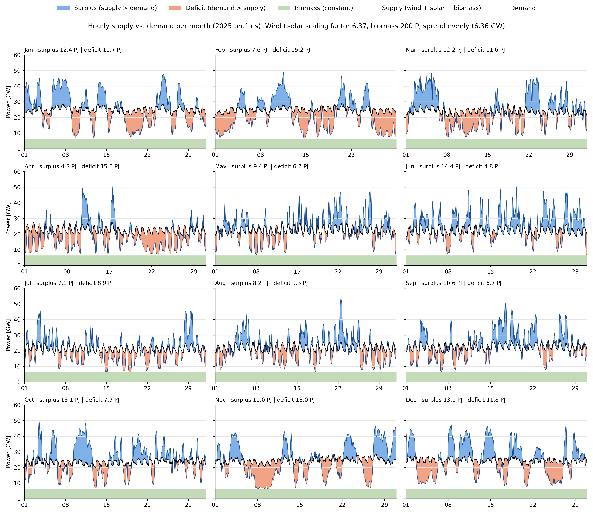

This note sums up what we have done up to and including step 3, and which assumptions Figure 1 is built on, so the whole group reads the figure the same way. It also describes what changes from step 4, where we start adding technologies to the system.
The code is in Final report/Data_analyse.ipynb in the GitHub repository Ebbeschou/P2X-DTU.
We have built an hourly model of a future Denmark with 730 PJ of energy demand, where wind, solar and biomass balance over the year.
The CSV file is missing 31 December 2025, so we have 8736 hours instead of 8760. This changes the factors by about 0.3 %.
Households and light transport follow today's electricity consumption hour by hour. Industry and heavy transport are constant.
| Sector | PJ/year | Mean power | Time profile |
|---|---|---|---|
| Households + light transport | 300 + 100 = 400 | 12.72 GW | Standardised gross consumption 2025 |
| Industry (incl. 30 PJ data centres) | 180 | 5.72 GW | Constant |
| Heavy transport (trucks, shipping, aviation) | 150 | 4.77 GW | Constant |
| Total | 730 | 23.21 GW |
How the profile is found: the gross consumption of each hour is divided by the annual mean (4.62 GW). The profile then has a mean of 1 and only shows the fluctuations. It is multiplied by the future mean.
Phh+light(t) = Pgross(t) / P̄gross · P̄hh+light = Pgross(t) · 400 PJ / 145.4 PJ = 2.75 · Pgross(t)
We assume that:
Biomass is 200 PJ per year and is used evenly: 6.36 GW every single hour (200 PJ / 8736 h).
Figure 1 is an energy-balance overview, not an electricity balance. It shows whether there is enough energy in each hour if all energy could be used directly 1:1.

Why the two sides can be compared: both sides are in the same unit, energy (PJ per year, or GW = energy per hour). That is why we can plot them on top of each other.
But they are different types of energy:
What the figure does not show:
This is exactly what we investigate in the next steps, when we change the demand side.
How to read the panels:
Over the year, supply (530 PJ wind + solar + 200 PJ biomass) and demand (730 PJ) balance. Hour by hour it is different: 123 PJ of surplus has to be moved to hours with 123 PJ of deficit, and only 4156 of 8736 hours (48 %) have a surplus.
April is short of the most energy, June has the largest surplus
Monthly balance, supply − demand [PJ]. Green = surplus, red = deficit. Over the year it sums to zero.
Source: Data_analyse.ipynb · Energinet ProductionConsumptionSettlement 2025, scaled · 8736 hours
These 123 PJ and the differences between months are what storage, P2X and flexible biomass have to handle from step 4.
From step 4 we turn demand into real energy types and add technologies. This changes both how much electricity is needed and when.
| Technology | What it changes | Effect in Figure 1 |
|---|---|---|
| Battery electric cars and trucks | Fuel is replaced by electricity, which needs much less energy. Charging can be shifted to evening and night. | Demand falls and gets a new daily profile |
| Heat pumps | Heat is made from electricity with a COP above 1, so less electricity is needed for the same heat | Demand falls but becomes more winter-heavy |
| P2X (electrolysis → hydrogen, e-methanol, e-ammonia, e-kerosene) | Fuel for ships and aircraft is made from electricity, with losses along the way | Demand rises but can run flexibly in the blue surplus hours |
| Batteries | Shift electricity from hour to hour and day to day, with a small loss | The blue and red areas get smaller |
| Hydrogen storage + fuel cell | Shifts energy over weeks and months, e.g. from summer to winter | Covers long red periods |
| Flexible use of biomass | Burned when wind and solar are short, instead of evenly | The green band becomes high in red periods and low in blue ones |
Efficiencies and COP values have to be taken from the Danish Energy Agency's technology catalogue and cited before they are used in the calculations.
Data_analyse.ipynb